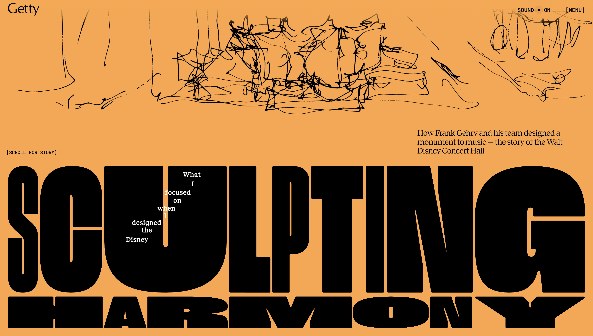
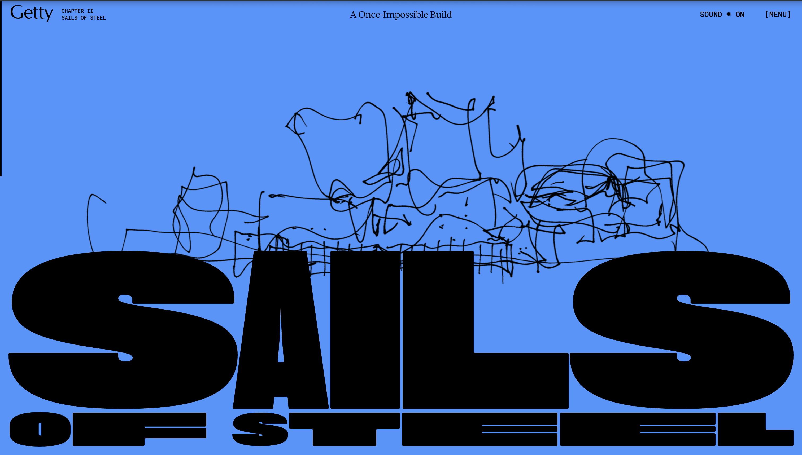
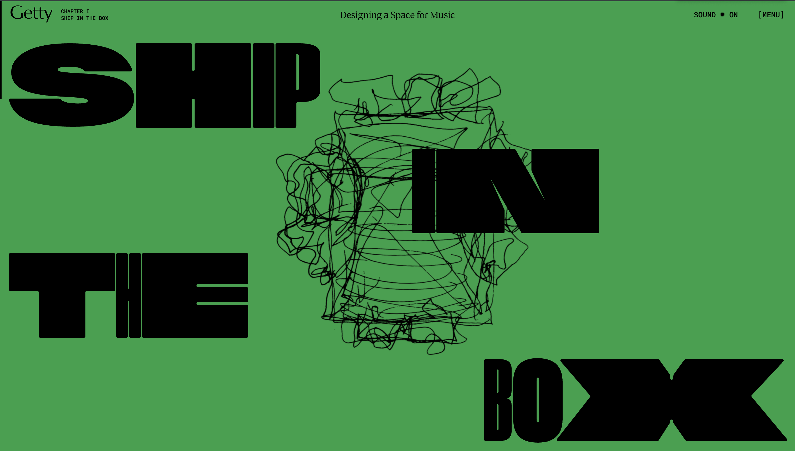

FRANK GEHRY

/>

I was immediately drawn to the interactive text animations when scrolling, as well as the text that appears when moving the cursor around. The dynamic way the website responds to the movement made me curious to explore further.
As I interacted with the experience, I found myself scrolling, moving the cursor, clicking to play sound, viewing the menu, hovering over menu items, and exploring the accessible version. Among these actions, I spent the most time scrolling through the homepage, moving through the different chapters and absorbing the various elements, and scrolling was the most frequent action during my interaction.
While the website is fun and engaging, it can sometimes distract from the primary purpose. I had to revisit the introduction to fully understand who the artist and architect were. The experience communicates its goal by telling the story of the architecture of the Walt Disney Concert Hall and its design by Frank Gehry through a series of chapters that include images, text, music and videos, presenting it in a playful yet informative way.
The experience is intended to be explored in a single session of around 30 minutes, though some users might return to discover more details. This intended engagement is communicated through the website's clear structure and navigation, guiding users naturally as they scroll through each chapter.
The experience draws on multiple media forms, including interactive video, images, and orchestral music that changes with each chapter and plays continuously as users to engage in an immersive, documentary-like way, following the narrative carefully while exploring the content. they also evoke feelings of immersion, curiosity, and awe, giving the presentation a cinematic feel that highlights the creative design of the building.
At times, the experience can feel overwhelming due to the amount of text, images, videos presented simultaneously. This can make it challenging to focus on specific information, and it was sometimes difficult to identify who the website was about.
The most satisfying aspect is the scroll-based animations, which are smooth, well-executed, and create a seamless, engaging experience that brings the architecture and narrative to life.